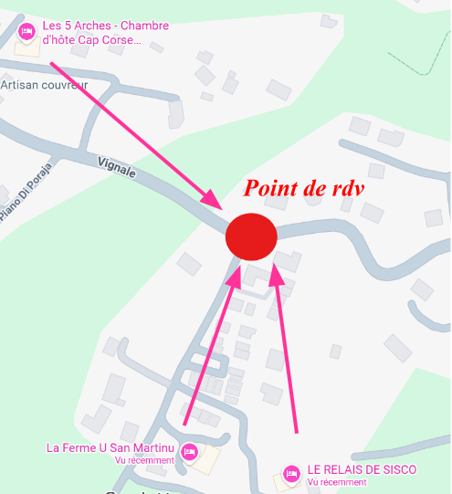
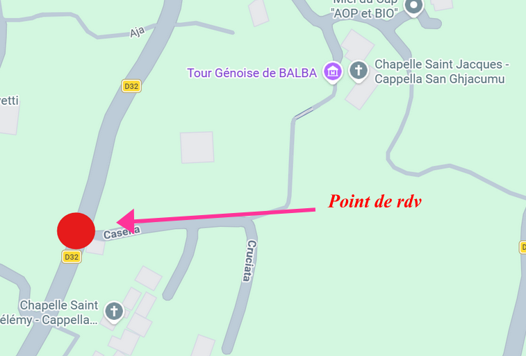

Le Programme du Jour J
Samedi 4 juillet 2026
Le mariage civil aura lieu à la mairie de Sisco, situé dans le hameau de Munacaghja, en haut de la vallée de Sisco, à 16H30.
La cérémonie laïque aura ensuite lieu à 17H30 dans le hameau de Balba.
A partir de 18H30 la soirée commencera et aura lieu entièrement dans le hameau de Balba, sur la place du village.
🚌 Navettes aller
Pour faciliter les déplacements entre les différents hameaux, nous avons prévu un système de navette qui viendra vous chercher dans vos différents logements aux horaires suivants :
- 15H40 pour les personnes logeant à la marine de Sisco – lieu de rdv : devant l'hôtel U Pozzu (attention à ne pas confondre avec le Domaine du Pozzu)
-
15H55 pour les personnes logeant au Relais de Sisco, à la ferme U San Martinu et aux 5 Arches. Lieu de rdv sur la route

-
16H15 pour les personnes logeant dans les hameaux de Balba, Casella, Chiosu. Lieu de rdv sur la route

🚌 Navettes retour
Pendant la soirée, un système de navettes (mini bus) sera à votre disposition pour vous permettre de rentrer en toute tranquillité dans vos différents logements à Sisco.
🚗 Venir en voiture
Vous pouvez aussi utiliser votre voiture si vous le souhaitez mais nous attirons votre attention sur plusieurs points :
- La route (D32) qui part de la Marine et dessert tous les hameaux de la vallée est très sinueuse et les croisements entre voitures ne sont pas toujours possibles (quelques manœuvres à prévoir)
- Le nombre de places de stationnement dans les villages est très limité et nous ne souhaitons pas engorger Balba (hameau où aura lieu la soirée) avec des voitures peu décoratives
- Il peut y avoir des contrôles policiers à la marine de Sisco le samedi soir avec éthylotests
Dimanche 5 juillet 2026
Le brunch commencera à partir de 11h30 au domaine du Pozzu, situé à la Marine de Sisco. Nous serons en bord de mer avec possibilité de se baigner donc n'oubliez pas vos maillots de bain !
Pas de service de navette car un grand parking est disponible.